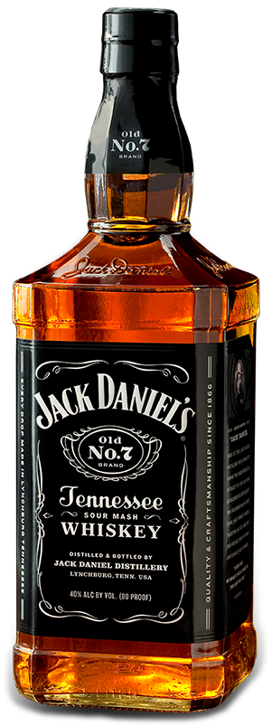
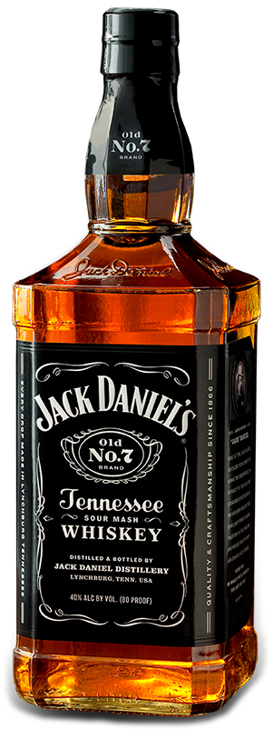
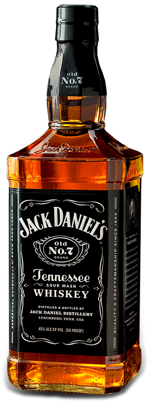

LAZER
Clique-me
LAZER
Clique-me
LAZER/HOBBIES
 XBOX IS BETTER THAN PLAYSTATION
XBOX IS BETTER THAN PLAYSTATION
Não há nada melhor do que ligar um XBOX ONE © e se deliciar com grandes jogos como
FORZA HORIZON © e COD:Warzone
Se você ainda é um jogador genérico de PLAYSTATION, por favor, saia dessa vida, e
ADQUIRA SEU XBOX SERIES X
 Um dos esportes menos assistidos por nós
Um dos esportes menos assistidos por nós
Mas continua sendo melhor que qualquer jogo do Palmeiras
ou qualquer tentativa frustrada de ganhar o mundial
Fórmula 1 é para aqueles que se consideram sofisticados e que não
torçam para times sem
mundial (e que nunca fez gol em mundial também)
 나는 kdrama를 좋아한다.
Doramas são as melhores histórias em formato cinematográfico já criadas neste planeta!
나는 kdrama를 좋아한다.
Doramas são as melhores histórias em formato cinematográfico já criadas neste planeta!
Graças a elas qualquer pessoa pode aprender a sorrir, chorar e ficar irritado!
Hwayugi é o melhor dentre os doramas
Assitir a UEFA Champions League e ver o Neymoleque perder não tem preço
Großartiger FC Bayern München!
 アニメが好きだけどオタクにならないのは間違っているのでしょうか？
Animes são a melhor forma de descontrair quando há diversas coisas que podem te afligir.
アニメが好きだけどオタクにならないのは間違っているのでしょうか？
Animes são a melhor forma de descontrair quando há diversas coisas que podem te afligir.
Animes como:
- Attack On Titan
- Parasite
- Naruto
- Furueru Kuchibiru (SUPER RECOMENDADO, MUITA QUALIDADE)
são ótimos!
DIRIGIR ESCONDIDO POR AÍ É MUITO AWESOME! ASPIRANTES
A DESENVOLVEDOR WEB RECOMENDAM
A DESENVOLVEDOR WEB RECOMENDAM
"Mutar" os colegas no Discord, silenciar o WhatsApp e colocar Fones de ouvido
Não há algo mais revigorante que escutar Frank Sinatra no máximo bebendo suco de maçã e fingindo
que é Whiskey
 


Tocar Um instrumento sozinho, dentro do quarto enquanto deixa o tempo passar
A sensação é ótima. Todos deveriam tentar um dia!
 Aprende algo novo sobre programação ou um novo idioma
Aprender palavras ou frases novas de um outro idioma é um ótimo passatempo, além de também
Aprende algo novo sobre programação ou um novo idioma
Aprender palavras ou frases novas de um outro idioma é um ótimo passatempo, além de também
ser uma atividade que auxilia a compreensão da própria língua portuguesa, pelo fato
de que algumas vezes ao aprender uma nova palara, pensamos nela em português
para depois pensarmos nela noutro idioma, exercitando o pensamento na língua nativa Aprender alguma linha de código em linguagens de programação até então não exploradas
também leva a exercitar sua lógica, e te dá conhecimento acerca de outras
linguagens. QUANTO MAIS REPERTÓRIO MELHOR!
 Programar e ver que seu código está funcionando corretamente!
Programar e ver que seu código está funcionando corretamente!
if(isCodeWorking($code) == true){
echo "Hooray!" ;
}
else{
echo "do you really wanna keep trying? LOL";
$persistence = false;
$wellBeing = false;
$willToLive = false;
$destroyComputer = true;
}